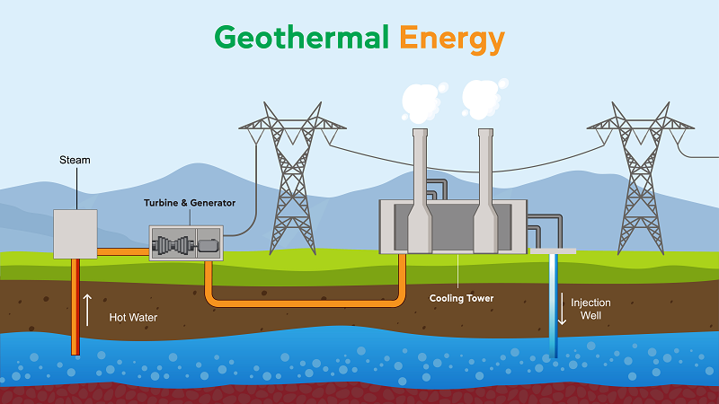
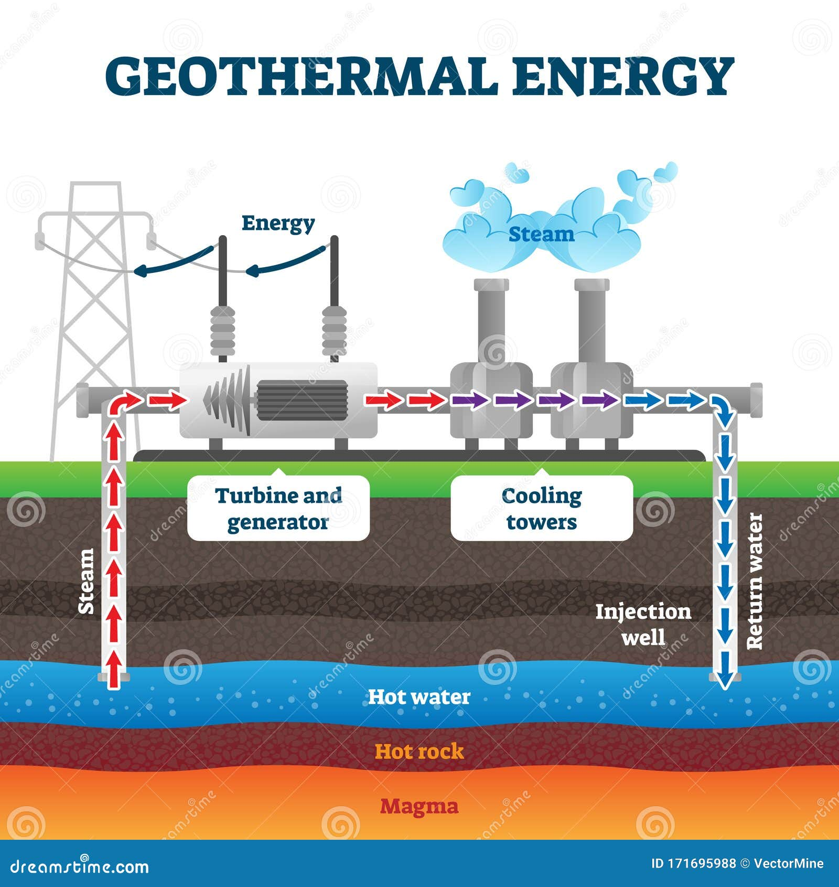

what is geothermal energy?
Geothermal energy is a type of renewable energy
taken from the Earth’s core. It comes from heat
generated during the original formation of the planet
and the radioactive decay of materials. This thermal energy
is stored in rocks and fluids in the centre of the earth
Geothermal Energy - Geyser EruptingThe difference
between the temperature in the earth’s core
and the surface drives a continuous conduction of thermal energy
from the centre to the exterior of the planet.
High temperatures of over 4000°C cause some of
the rock in the centre of the Earth to melt and
form hot molten rocks called magma. These heats also cause the
mantle to behave plastically and portions of it to convect
upwards, since it is lighter than the surrounding rock.

how is it Used?
It has been used in some countries
for thousands of yearsfor cooking and in heating
systems. The underground geothermal reservoirs of
steam and heated water can be used for electricity
generation and other heating and cooling applications.
One example of heating and cooling at a constant temperature
is the installation of a geothermal heat pump about 10 feet
underground. These pipes are filled with water or an
antifreeze solution. The water is pumped around the
closed loop of pipes. These ground source heat pump systems
help to cool buildings in summer and maintain warmth in summer.
This occurs by absorbing the earth’s heat as the water and
steam circulates back into the building.Geothermal water
has been used to help grow plants in greenhouses, for
district heating in homes and businesses. It can also
be piped under roads to melt snow.

How is Geothermal Energy Produced?
Wells of up to a mile deep or more are drilled into underground
reservoirs to tap into the geothermal resources. These resources can
be exploited from naturally occurring heat, rock and water permeability
or through enhanced geothermal systems, which enhance or create
geothermal resources through a process called hydraulic stimulation.
These geothermal resources, whether natural or enhanced, drive turbines
linked to electricity generators.
The first recorded instance of geothermal heat being used for
producing electricity was in Larderello, Italy in 1904. Yet, geothermal
heat has been used for bathing since the Palaeolithic Age. Monkeys in Japan
have also been shown to use heated water from hot springs to keep warm during
winter months in mountainous regions.
